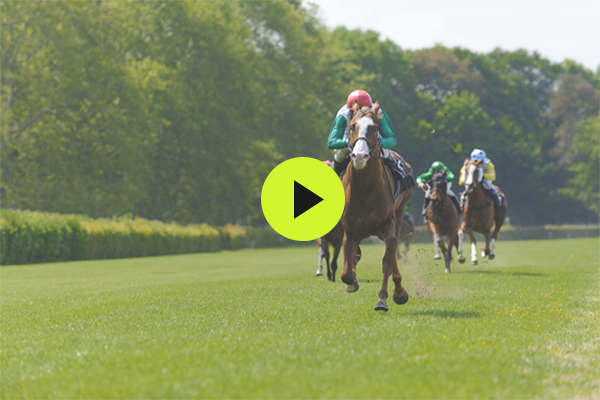

About Us
SIS has been a trusted partner to the betting and gambling industry for over 30 years, supllying both retail and online operators. Our global delivery of data, streaming, pictures and gaming content enables more than 100,000 betting opportunities a year.
SIS delivers a broad range of products and services across a range of sports, with a focus on horse racing, greyhounds and football.
We are the offcial betting data pattner for LaLiga, and the exclusive provider of live data
for more than 2,500 matches a season across every game of the top three football leagues and
major cup competitions in Spain.
SIS continually innovates to ensure that our customers can offer the best betting experience,
and we recently launched SIS Stream, a new streaming platform, and an exciting range of on-demand
virtual racing games.
